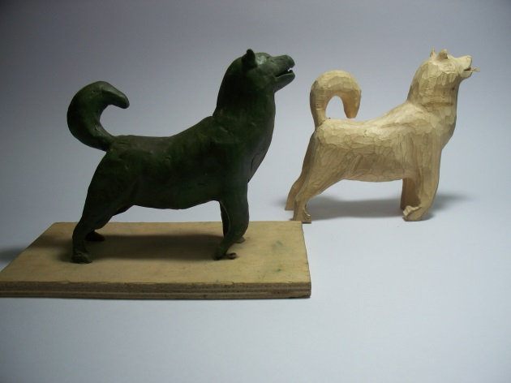
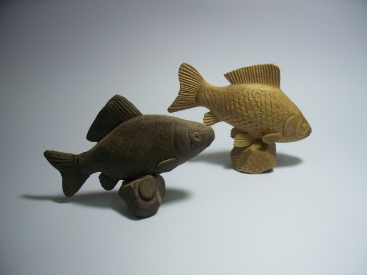
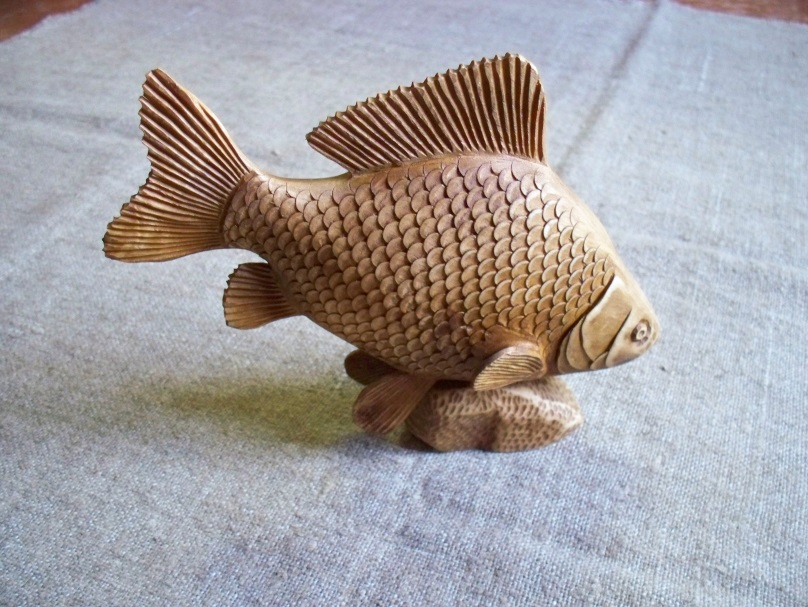
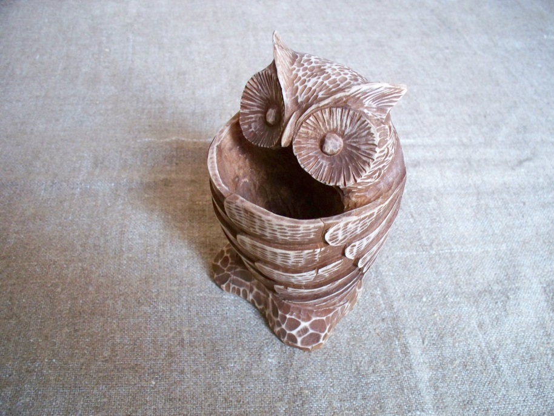
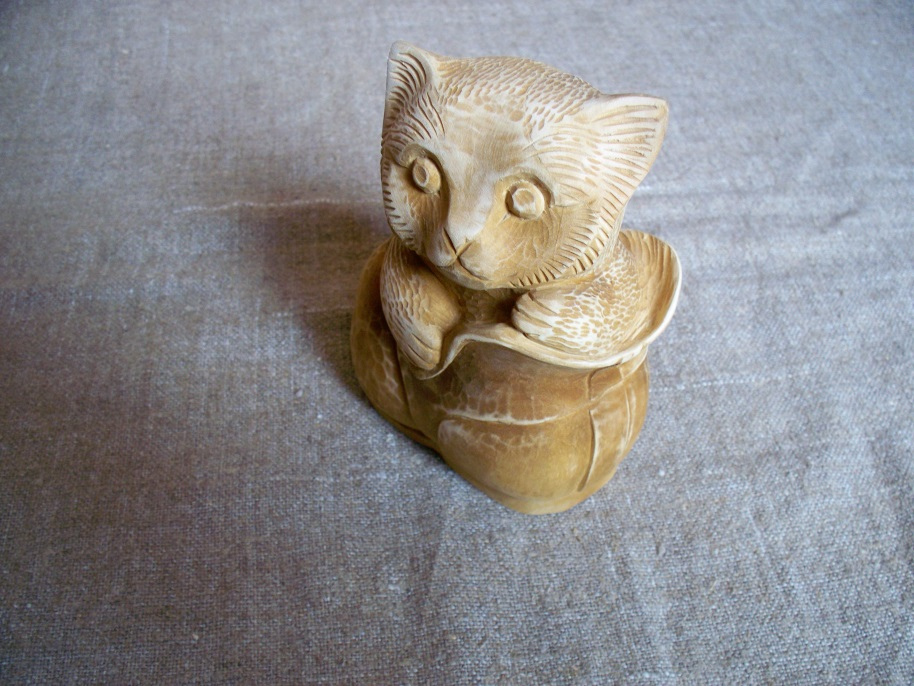
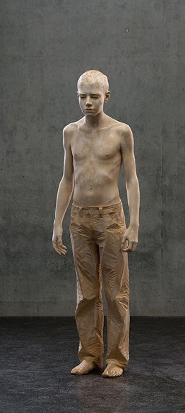

ЛАБОРАТОРНО-ПРАКТИЧНА РОБОТА
Тема: :«Техніка і послідовність виготовлення анімалістичного та антропоморфногооб’ємного виробу»
Мета: Ознайомитись з розміткою,технікою і послідовністю виготовлення об’ємного виробу.
Матеріали та інструменти: Набір інструментів для об’ємного різьблення. Заточний і креслярський інструмент.
Порядок виконання роботи:
- Ознайомитись з розмічанням, технікою і послідовністю виготовлення об’ємного виробу.
- Виготовити один із запропонованих варіантів скульптури:
- риба (мал. 93)
- птах (мал. 94)
- тварина (мал. 95)
- людина (мал. 96)
Теоретичні відомості:
При виконанні скульптурного різьблення майстер повинен враховувати розмір скульптури з можливостями її використання, розташування в довколишньому просторі, заздалегідь визначити призначення і місцезнаходження майбутнього виробу, а також порівняти його із заготовкою деревини: скульптура повинна максимально вкладатися в масштаб заготовки. Всілякі додавання, нарощування, підклеювання дерева можливі тільки у виняткових випадках.
Приступати до скульптурного різьблення слід лише тоді, коли майстрові до найдрібніших деталей буде зрозумілий весь задум: форма, розмір, техніка обробки.
Щоб під час роботи не підстерегла невдача і щоб украй не зіпсувати заготовку, використовують надійний і перевірений прийом – ліплення із глини або пластиліну моделі майбутньої скульптури – точної копії або зменшеної в певному масштабі(мал. 90,91).

Мал. 90. Пластилінова модель собаки і готова скульптура.
Модель дає можливість відчути об'єм, уточнити техніку, розробку і деталювання рельєфу, визначити, який інструмент знадобиться для виконання різьблення.

Мал. 91. Пластилінова модель риби і готова скульптура
Скульптуру, особливо декоративну, краще всього різати з м'яких порід деревини, але для архітектурно-декоративних деталей – що тримають опору, стовпів та інших – потрібні тверді породи. Причому дерево має бути добре просушене, без гнилі, оскільки в процесі різьблення це обов'язково ускладнить роботу і позначиться на її якості.

Мал. 92. Етапи виконання скульптурного різьблення:
а – виготовлення моделі декоративної скульптури; б – закріплення заготовки і основна розмітка; в – обрубка основних форм; г – опрацювання рельєфу і деталей скульптури.
Спочатку будь-яку за розміром заготовку для скульптури надійно закріплюють у вертикальному або горизонтальному положенні , щоб різьбяр міг вільно підійти до неї з будь-якого боку.

Мал. 93. Риба (карась)
Наступним етапом роботи є нанесення основних контурів майбутньої скульптури і вирубування сокирою грубих форм фігури (мал. 92). Якщо скульптура невеликих розмірів, застосовують стамески прямі, напівкруглі, пологі, а іноді і куточки . Після обрубування основних форм приступають до виявлення деталей за допомогою крупних стамесок із подальшим деталюванням рельєфу більш мілкими стамесками.

Мал. 94. Птах (сова)
Якщо деревина дуже тверда і суха, її рекомендують періодично змочувати водою.
Готову скульптуру деякий час витримують в сухому місці. Якщо деревина була вологою, на ній можуть з'явитися тріщини.

Мал. 95 Тварина (кіт)
Після висихання ці тріщини заклеюють клинами із такої ж породи дерева, з таким же розташуванням шарів деревини і малюнком.
Ці вклейки будуть малопомітні. Просушену скульптуру обробляють і наносять захисне покриття залежно від того, де вона буде знаходитися.

Мал. 96. Людина (підліток)
Контрольні питання:
-
Розкажіть техніку і послідовність виготовлення:
- риба
- птах
- тварина
- людина